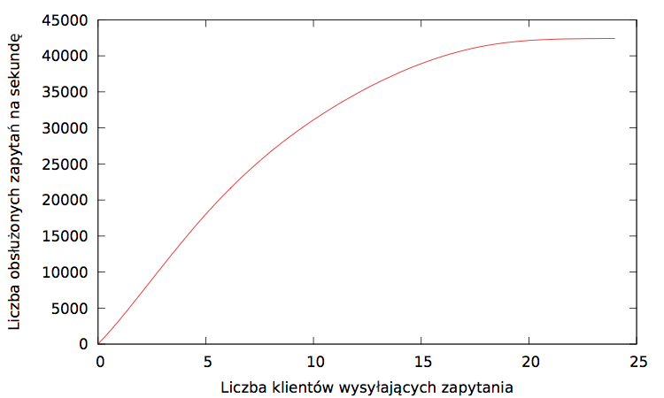
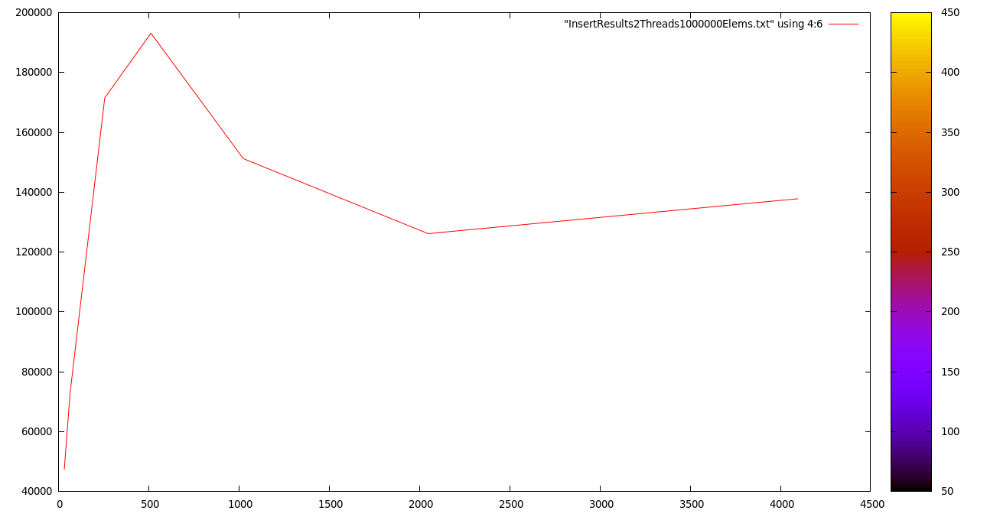

Rozproszona baza szeregów czasowych
dla klastra GPU
Karol Dzitkowski
Jakub Dutkowski
Tomasz Janiszewski
Plan prezentacji
- Ogólny opis systemu
- Opis Architektury
- Wyniki
- Podsumowanie
Ogólny opis systemu
- Baza danych szeregów czasowych
- Przechowywanie danych w pamięci kart graficznych
- Rozproszona architektura - duża skalowalność
- Wykorzystanie wydajności kart graficznych
Wyniki
Stworzona baza danych cechuje się dużą skalowalnością. Kolejne węzły obliczeniowe mogą być dodawane, lub też wymieniane (utrata danych) w czasie działania całego systemu. Ponadto ilość wpływających danych limitowana jest przede wszystkim samą wydajnością REST'owego API. Dzięki wydajności kart graficznych oraz przechowywaniu danych w pamięci podręcznej, zapytania wykonywane są z dużą szybkością nawet przy dużej ilości nieustannie wpływających danych.
Ilość zapytań obsługiwanych przez serwer główny na sekundę

Ilość zapytań typu Insert obsługiwanych przez węzeł na sekundę

Ilość przetrzymywanych danych
Zakładając że:
- Dane wpływają ze średnią prędkością 25 000 elementów na sekundę
- Wielkość elementu po kompresji wynosi średnio 8 bajtów
- Posiadamy 3 klastry po 3 karty graficzne o pojemności 6 GB
- Baza danych ustawiona jest aby wykorzystywać 4GB na karcie na przechowywanie danych
Baza danych jest w stanie przechowywać dane z okresu ponad 2 dni wstecz.